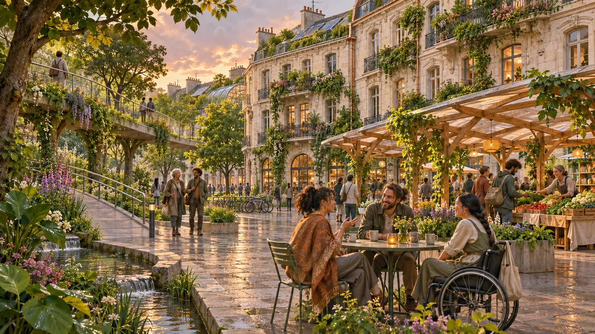
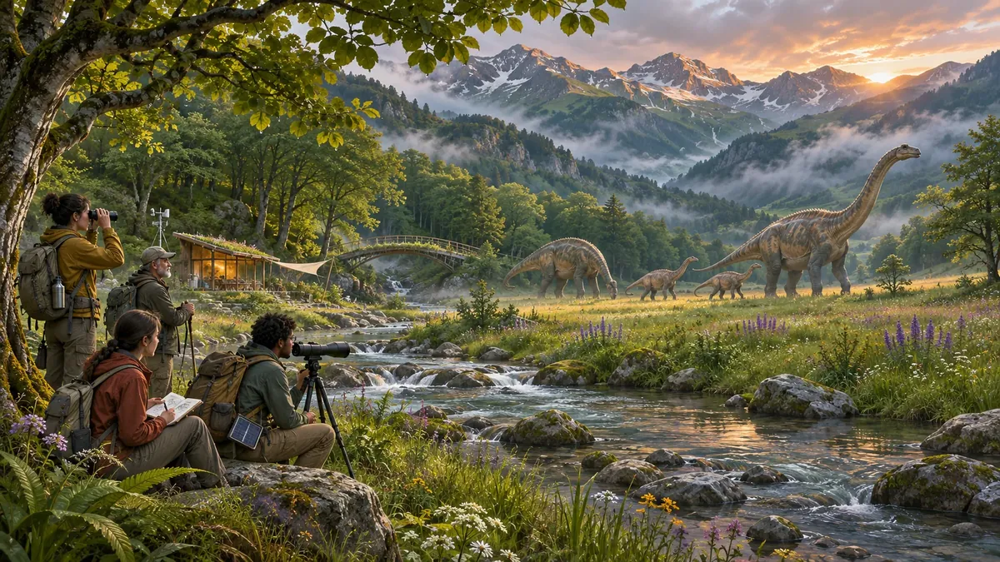
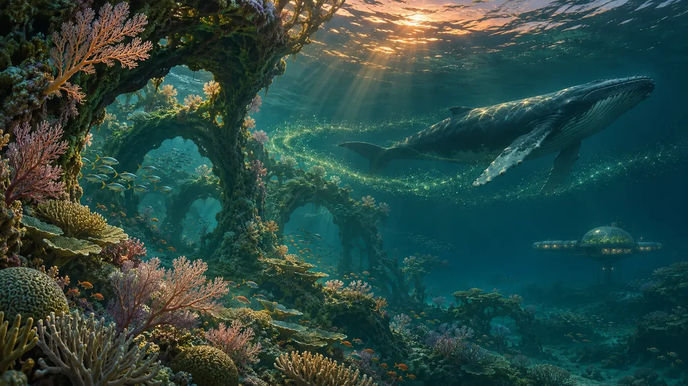

Logement de base, alimentation, eau, soins, éducation, mobilité fondamentale et outils de communication sont garantis.
ATLAS JOUEUR · CONNAISSANCES PUBLIQUES
Le compendium
d’une Terre habitée.
Une civilisation qui a réparé ses grands équilibres sans mettre le monde sous cloche. Voici ses paysages, ses habitudes, ses technologies et les désaccords qui donnent encore du mouvement à la vie.
COMMENCER PAR LA VIE SUR TERRE
Le tram ralentit.
La journée continue.
À 8 h 12, un troupeau occupe le corridor qui longe les voies. Le réseau annonce quelques minutes de détour. Une passagère range son terminal ; près de la vitre, un enfant suit les silhouettes entre les herbes hautes. Personne n’appelle cela une aventure. C’est simplement le trajet du matin.
Plus tard, il y aura le travail, un repas partagé, peut-être une réunion de quartier ou une promenade au bord de l’eau. En 2187, l’extraordinaire s’est glissé dans le quotidien. Les personnes, elles, continuent d’aimer, d’apprendre, de douter et de choisir.
PARCOURIR L’ATLAS
Choisissez un chemin.
Les chapitres vont du quotidien terrestre aux horizons lunaires. Utilisez la recherche pour retrouver un sujet, un métier ou un terme.
15 chapitres
Votre lecture
0 %
01 / LE QUOTIDIENTERRE
Une journée parmi d’autres
Les grandes réussites de 2187 ne s’annoncent pas chaque matin. Elles se remarquent dans les gestes ordinaires : un soin accessible, un transport qui s’adapte au vivant, une personne qui reprend des études à soixante-dix ans.
Un assistant personnel résume la météo et les changements d’itinéraire. Dans la rue, les habitants se croisent entre jardins, commerces, ateliers et espaces publics. Les besoins essentiels sont garantis ; les gens travaillent encore pour apprendre, contribuer, créer, être reconnus ou poursuivre une ambition.
À midi, on se retrouve autour d’un repas. Dans l’après-midi, une assemblée discute d’un aménagement ou une équipe part sur le terrain. Le soir, des proches d’autres villes rejoignent la conversation à distance. Ce monde est spectaculaire pour un visiteur venu du XXIᵉ siècle ; pour celles et ceux qui y vivent, c’est la maison.
Les habitudes diffèrent selon les régions, les générations, les métiers et les milieux de vie.
02 / HABITERVILLES & TERRITOIRES
Des villes qui laissent passer le vivant
La plupart des habitants vivent dans des métropoles compactes. Les quartiers anciens n’ont pas été effacés : leur pierre, leurs places et leurs usages côtoient passerelles végétales, transports autonomes et constructions nouvelles.
Architecture cultivée, structures maîtrisées
Des panneaux de mycélium, des bois guidés pendant leur croissance et des cloisons végétales entrent dans la construction. Certains matériaux vivants contribuent à l’isolation, à l’humidité ou à la qualité de l’air. Ils restent entretenus et contrôlés ; les fonctions porteuses et la sécurité reposent sur l’ingénierie. Quelques bâtiments conçus comme des organismes demeurent rares et expérimentaux.
Des quartiers à plusieurs niveaux
Dans certaines villes, des forêts aériennes relient des habitats adaptés à la faune. Les grands animaux utilisent surtout des corridors terrestres dimensionnés pour eux. Jardins, rues, rampes, ascenseurs et commerces se superposent parfois sans abandonner les espaces au sol. Les quartiers historiques conservent leur caractère ; les logements dignes sont garantis, tandis que l’adresse et la surface continuent d’avoir une valeur.

Un immeuble peut fleurir à la saison prévue. Il n’est pas conscient : ses cycles sont cultivés, vérifiés et entretenus.
03 / CONTRIBUERVIE COMMUNE
L’abondance ne rend personne identique
Personne n’a besoin d’un emploi pour survivre. Mais les projets, les savoir-faire, le prestige et les expériences rares comptent toujours. La sécurité matérielle a déplacé les enjeux ; elle ne les a pas supprimés.
L’argent, les revenus, les entreprises et la propriété privée existent. Les entreprises innovent et se concurrencent, dans un cadre qui empêche qu’une fortune achète une exemption ou qu’un monopole prive les autres de services vitaux. Les places dans les grandes expéditions, la recherche de pointe et les programmes spatiaux restent convoitées.
L’éducation est gratuite et accessible tout au long de la vie. Les enseignants, les tuteurs et l’apprentissage concret accompagnent les outils numériques. Une personne peut changer plusieurs fois de métier, reprendre des études, devenir bénévole ou transmettre une pratique. L’expérience et les qualifications restent nécessaires lorsque la sécurité ou la spécialisation l’exige.
Réservation, rotation, disponibilité, tirage au sort ou nécessité professionnelle peuvent organiser l’accès à un lieu ou à un équipement spécialisé.
Sur une vie longue, plusieurs métiers, formations, engagements et périodes de retrait peuvent se succéder.
04 / PRENDRE SOINCORPS & SANTÉ
La médecine repousse les limites, pas la vulnérabilité
La médecine régénératrice répare de nombreux organes et membres à partir de tissus cultivés. Les cancers sont mieux maîtrisés et certaines lésions autrefois irréversibles peuvent être traitées. Une blessure grave reste pourtant une épreuve, parfois longue.
L’espérance de vie courante se situe entre 110 et 130 ans. Les traitements prolongent surtout les années vécues en bonne santé ; vieillesse, handicap, rééducation et deuil font toujours partie de la vie. Des familles peuvent réunir quatre ou cinq générations, et chacun accumule des souvenirs, des métiers et des relations au fil d’une existence.
Prothèses et aides sensorielles sont répandues, principalement pour l’autonomie et la santé. Les augmentations restent modérées et encadrées. La santé mentale est accessible et confidentielle. Les émotions ne sont pas effacées : solitude, jalousie, traumatisme, tristesse et amour gardent leur poids. Les archives familiales transmettent des images et des récits, pas une conscience survivante.
Une personne de soixante-dix ans qui reprend des études n’est pas une exception. Elle sait simplement qu’elle a encore du temps pour apprendre.
05 / COMPRENDREIA & LIBERTÉS
Des partenaires numériques sous responsabilité humaine
Un assistant peut organiser un trajet, expliquer un dossier, traduire une conversation ou comparer des options. Il connaît parfois les habitudes de la personne qui l’utilise ; celle-ci peut corriger ses propositions, les refuser ou le désactiver.
Les robots prennent des formes adaptées à leur travail : roues, bras, pattes, coques ou silhouette humanoïde. Ils sont familiers sans être automatiquement considérés comme conscients. La question d’une expérience subjective chez les IA avancées reste ouverte ; la société en débat avec prudence.
Les décisions importantes gardent un responsable humain ou institutionnel identifiable. Les données médicales, sociales et numériques restent sous l’autorité de la personne. Le consentement peut être retiré, un fournisseur remplacé et un résultat automatisé contesté. Les traductions instantanées sont très performantes, mais apprendre une langue conserve sa valeur culturelle.
06 / COHABITERFAUNE RESTAURÉE
Le vivant n’est pas une attraction à l’heure fixe
La génétique restauratrice a permis de reconstruire certaines espèces disparues à partir de données fragmentaires. Les grands herbivores — dont des brachiosaures — parcourent des régions adaptées. Ces animaux ressemblent aux formes qui les ont inspirés sans être des copies parfaites du passé.
Mammouths et troupeaux contemporains traversent de vastes corridors. Des ptérosaures de grande envergure circulent entre habitats protégés ; certaines migrations d’oiseaux et de papillons rassemblent des millions d’individus. Les horaires, les voies de transport, les éclairages et les activités humaines s’ajustent à ces passages.

Des prédateurs de petite et moyenne taille peuvent occuper leur place dans des écosystèmes adaptés. Les prédateurs géants ne sont pas relâchés dans les espaces sauvages. Les animaux domestiqués restent peu nombreux et choisis selon leurs besoins : la familiarité ne supprime ni les soins ni les précautions.
Les systèmes écologiques observent et aident à comprendre. Les spécialistes décident d’intervenir face à un risque sérieux ; la nature n’est pas contrôlée en permanence.
07 / EXPLORERPAYSAGES
Des milieux différents, jamais uniformes
Les déserts n’ont pas été transformés en forêts. Dans certaines régions, la restauration des sols, des graines et des cycles de l’eau fait revenir des floraisons saisonnières, le temps de quelques semaines.
Des réserves de recherche reconstituent des environnements inspirés du Carbonifère ou des périodes où vivaient les dinosaures. Elles combinent organismes recréés, espèces actuelles et milieux artificiels. Elles ne prétendent pas restituer exactement un passé dont les données sont incomplètes ; les organismes incompatibles avec les écosystèmes contemporains restent confinés.
Les jardins publics mêlent art et biotechnologie. Certaines plantes orientent leurs feuilles, changent de couleur ou s’ouvrent selon des stimuli définis. Ces végétaux ne sont pas conscients et leur diffusion est contrôlée. Les introductions d’organismes font l’objet d’évaluations scientifiques et citoyennes.
08 / PLONGEROCÉANS
La mer a retrouvé ses saisons
L’assainissement des eaux, la protection des habitats et les restaurations écologiques ont rendu aux océans une abondance nouvelle. Les courants et les chaînes alimentaires restent autonomes : la mer n’est pas devenue un jardin artificiel.
Certains récifs forment des arches et des cavités monumentales, soutenues durant leur croissance par des matériaux adaptés. Ces « cathédrales océaniques » sont protégées comme des communautés vivantes, pas traitées comme des décors. Des galeries panoramiques permettent parfois l’observation à distance.

Des organismes naturellement bioluminescents dessinent des routes lumineuses dans le sillage des navires. Les populations de cétacés ont retrouvé des dimensions remarquables ; les routes maritimes ralentissent ou se dévient pour limiter bruit et collisions. Au large, des plateformes modulaires accueillent zones humides, nurseries et laboratoires, tandis que des stations ouvrent l’accès à certaines profondeurs.
09 / FAIRE CIRCULERÉNERGIE & MATIÈRES
L’énergie est abondante ; l’attention reste nécessaire
Les dispositifs solaires sont efficaces et durables. Les bâtiments produisent souvent une partie de leur énergie ; des réseaux intelligents coordonnent stockage, production et consommation. Des modes de secours protègent les fonctions essentielles.
Un programme orbital de collecteurs solaires transmet déjà une part de son énergie vers des stations réceptrices, tout en restant en cours de déploiement. Ses reflets peuvent former, au crépuscule, des processions lumineuses visibles depuis certaines régions terrestres.
Les matériaux adaptatifs peuvent modifier certaines propriétés ou réparer de petites dégradations. Une casse importante demande toujours matière, énergie et intervention humaine. Le recyclage fournit la majeure partie des matériaux terrestres ; l’extraction et les usages spatiaux sont encadrés. Les réseaux sont décentralisés et redondants : une panne reste possible, mais les défaillances en chaîne sont devenues rares.
10 / SE DÉPLACERMOBILITÉ
Le voyage commence souvent par un train
Les grandes métropoles sont reliées par des lignes magnétiques rapides, qui atteignent couramment 500 à 700 km/h sur les tronçons adaptés. Les voyageurs passent ensuite aux transports partagés, aux véhicules à la demande ou aux itinéraires locaux.
La voiture individuelle n’est plus indispensable à la majorité. Conduire soi-même demeure un loisir ou une passion. Les aéronefs électriques couvrent les trajets adaptés, les voyages lointains emploient d’autres procédés, et les navires réduisent leur pollution tout en modifiant leurs routes selon les migrations marines.
Une rencontre avec un troupeau peut retarder un train. Une zone de nidification peut fermer un sentier. Les habitants consultent les cartes et avis écologiques, puis choisissent un autre passage : la cohabitation fait partie de la logistique ordinaire.
11 / PARTAGERCULTURES & HABITUDES
Les traditions ne sont pas devenues un seul monde
Arts, sports, cuisine, jeux, voyages et rencontres occupent une place importante. Les expériences immersives peuvent recréer un lieu ou une époque, mais le concert partagé, la promenade et le repas gardent leur présence propre.
Les cuisines, festivals et langues régionales continuent d’évoluer. Les traductions instantanées facilitent les échanges sans donner toutes les nuances d’une langue. Les agriculteurs et les collectifs combinent gestion de l’eau, restauration des sols, cultures diverses, fermes urbaines et techniques automatisées. L’élevage traditionnel subsiste à plus petite échelle ; les protéines cultivées sont devenues courantes.
La société est principalement rationaliste, sans imposer une croyance. Religions, spiritualités personnelles, humanisme et philosophies écologiques coexistent. Familles et relations amoureuses prennent des formes variées. L’ambition, la jalousie et le besoin de reconnaissance ont survécu aux crises qui ont changé le monde.
12 / REGARDER EN ARRIÈRECHRONOLOGIE PUBLIQUE
Le long redressement de l’humanité
Aucune invention n’a réparé la planète d’un seul coup. Le changement s’est construit sur plusieurs générations : mouvements citoyens, science, réformes, compromis et corrections d’erreurs.
- XXIᵉ siècle
Crises et dépendance
Climat, dégradation des milieux, pénuries et crises sanitaires fragilisent les sociétés. L’accès à l’eau, l’énergie, la santé et l’alimentation dépend parfois d’infrastructures trop concentrées.
- Les générations suivantes
Reconquête des biens communs
Mobilisations, grèves, réseaux scientifiques et réformes démocratiques rééquilibrent les services essentiels. Les entreprises continuent d’innover sous des règles communes.
- Sur le temps long
La Grande réparation
Décarbonation, restauration des sols, des forêts et des océans, réhabilitation des cycles de l’eau et coopération internationale avancent ensemble, avec des erreurs et des débats.
- 2167
Les grands équilibres se stabilisent
Les institutions scientifiques reconnaissent le rétablissement durable des équilibres climatiques et hydrologiques. Les événements extrêmes n’ont pas disparu.
- 2187
Un avenir ouvert
Entre six et huit milliards de personnes vivent dans une civilisation pacifiée qui poursuit la restauration, la recherche et l’exploration.
13 / DÉCIDERINSTITUTIONS & PROTECTION
Décider à l’échelle juste
Les nations, leurs langues et leurs cultures demeurent. Une citoyenneté planétaire garantit un socle commun de droits ; les institutions collectives interviennent surtout lorsqu’un sujet dépasse les frontières : climat, ressources et grands programmes scientifiques.
Les représentants élus travaillent avec assemblées citoyennes, consultations et référendums. Les IA peuvent comparer des scénarios et rendre un dossier compréhensible ; elles ne votent pas et ne gouvernent pas à la place des personnes. Les projets d’infrastructure, de recherche et d’expansion spatiale font encore débat.
La justice privilégie prévention, médiation, réparation et réinsertion, sans imposer la médiation aux victimes. Les forces de sécurité et les services de protection civile interviennent lorsque la situation l’exige. Les armées traditionnelles ont presque disparu ; les équipes spécialisées sont organisées autour du secours et de la protection.
14 / VIVRE AILLEURSLA LUNE
Un foyer humain, pas une destination abstraite
La Lune accueille des habitats familiaux, des laboratoires, des ateliers et des petites villes permanentes. La plupart des humains vivent sur Terre ; les voyages civils restent coûteux et les places convoitées.

Les quartiers combinent volumes protégés, structures de surface et serres pressurisées. Lumière, végétation et espaces collectifs rendent les lieux habitables, tandis que toute sortie exige préparation et équipement. Les personnes nées sur la Lune peuvent se sentir pleinement lunaires et participer aux mêmes institutions communes.
La faible gravité façonne muscles, os, équilibre et endurance. Le retour sur Terre demande une adaptation et un suivi, comme un séjour lunaire en demande aux Terriens. Les habitants ont une voix dans les décisions concernant leur territoire et ses ressources ; cela ouvre des négociations, pas une opposition entre deux humanités.
15 / REGARDER PLUS LOINORBITE & MARS
Les frontières restent des projets humains
Des stations orbitales accueillent résidents, chercheurs et équipes techniques. Mars abrite des bases scientifiques occupées par rotation, pas de grandes villes. L’éloignement, les radiations, le ravitaillement et les délais de communication imposent des limites concrètes.
Dans de bonnes fenêtres de départ, un trajet Terre–Lune prend un à trois jours ; Mars demande deux à quatre mois. Les engins utilisent plusieurs familles de propulsion et sont entretenus dans l’espace. L’humanité ne sait pas voyager entre les étoiles.
Des molécules organiques et des structures intrigantes alimentent l’exobiologie, mais aucune preuve irréfutable de vie extraterrestre n’a été confirmée. Les missions suivent des protocoles de protection biologique pour limiter les contaminations entre mondes. L’exploration reste une entreprise scientifique, civile et collective.
COMPENDIUM / ACTIVITÉS120 PROFILS · 24 DOMAINES
Travailler, apprendre, contribuer
Les métiers donnent des habitudes, des responsabilités et des personnes à retrouver. Les titres ci-dessous sont des portes d’entrée : un personnage n’en maîtrise pas toutes les spécialités. Une activité professionnelle ne donne ni bonus automatique, ni accès universel aux installations de son secteur.
24 domaines
Aucun domaine ou profil ne correspond à cette recherche.
Les 120 profils du catalogue sont des familles de métiers et des propositions à personnaliser. Un intitulé ne confère ni compétence automatique, ni accès libre aux équipements spécialisés.
POUR LES JOUEURSPERSONNE · PARCOURS · REPÈRES
Faire naître une histoire
Un personnage n’a pas besoin de sauver le monde. Il suffit d’une personne qui compte, d’un projet qu’on ne veut pas abandonner et d’une question qui reste ouverte.
Où commence sa journée ?
Un quartier-canopée, une ville lunaire, un atelier, une réserve ou une maison près de l’eau changent les gestes quotidiens.
Qui compte sur lui ?
Un proche, une équipe, un animal domestiqué ou un collectif donne des attaches et des obligations réelles.
Que souhaite-t-il changer ?
Un apprentissage, une relation à réparer, un projet collectif ou une ambition professionnelle suffit à lancer le récit.
Quelle limite devra-t-il respecter ?
Une qualification, la disponibilité d’un équipement, un territoire fragile ou le consentement d’autrui peut orienter ses choix.
REPÈRES RAPIDESGLOSSAIRE
Quelques mots du monde
Grande Dépendance
Période où de grandes entreprises ont concentré une influence excessive sur des services essentiels.
Grande réparation
Transformation énergétique et restauration des milieux menées sur plusieurs générations.
Socle de vie garanti
Accès assuré aux besoins essentiels, indépendant de l’obligation de travailler.
Citoyenneté planétaire
Ensemble de droits fondamentaux communs aux humains, en complément des appartenances territoriales.
Corridor écologique
Zone permettant aux espèces de circuler entre habitats, au sol, dans l’air ou en mer.
Architecture vivante
Éléments biologiques cultivés, contrôlés et intégrés à certains bâtiments.
Réserve du temps profond
Installation confinée qui reconstitue partiellement un milieu ancien à des fins de recherche ou d’apprentissage.
Cathédrale océanique
Récif monumental protégé pour ses valeurs biologique, scientifique et culturelle.
Route lumineuse
Trace de bioluminescence naturelle parfois visible dans le mouvement d’une mer ou le sillage d’un navire.
Procession orbitale
Reflets solaires successifs de collecteurs en orbite, visibles depuis certaines régions terrestres au crépuscule.
Protection biologique réciproque
Protocoles qui limitent la contamination croisée entre la Terre et les autres mondes.
Matériau adaptatif
Matériau technique dont certaines propriétés changent dans des limites prévues par sa conception.
UN MONDE OUVERT
Les habitants de 2187 ont préservé leur planète et bâti une paix durable. Ils doivent encore choisir ce qu’ils feront de cet héritage. L’avenir s’écrit dans les familles, les assemblées, les ateliers, les océans et les villes — une décision à la fois.